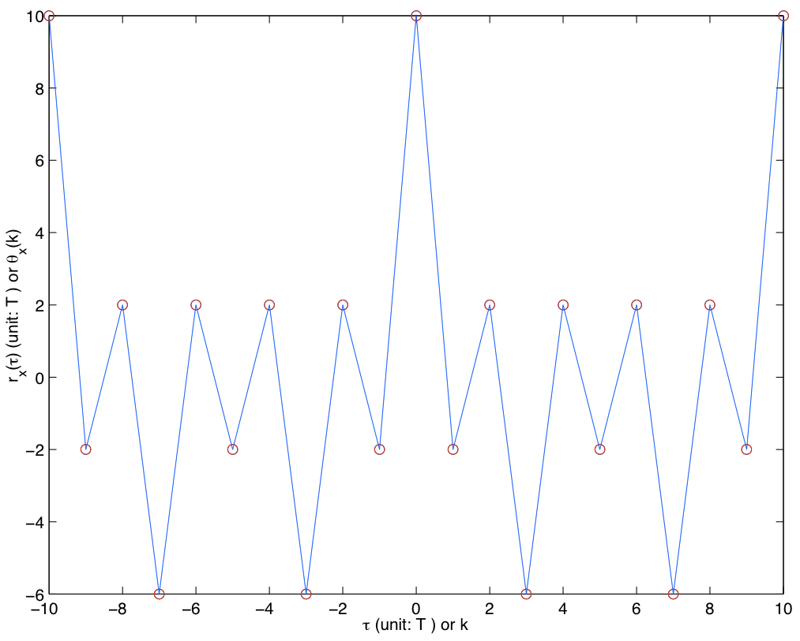

7.3. Signature Signal Design#
It is clear from the decision statistic of the generalized LRT in (7.7) that the acquisition performance is determined by the auto- and cross-correlation functions of the signature signal in the presence of noise, interference, and packets with other signature signals. Good designs for signature signals should be ones that have good auto- and cross-correlation properties.
Thus, we need to study the correlation functions of signature signals in order to design them. From (7.6), the correlation properties of the signature signal \(x(t)\) is clearly determined by the signature sequence \(x[n]\). Hence, we will start by looking at the correlation properties of the signature sequence \(x[n]\).
7.3.1. Periodic correlation functions of signature sequences#
Let \(x=(x[0], x[1],\ldots, x[N-1])\) denote a signature sequence of length \(N\). Let the periodic extension of \(x\) be such that the \(l\)th element \(x[l] = x[l~\bmod~N]\). Slightly abusing notation, we also use the same notation \(x\) to denote periodic extension. We will interchangeably consider a sequence of length \(N\) and its periodic extension below.
Define the discrete-time periodic cross-correlation function between the symbol sequences \(x\) and \(y\) as
(7.8)#\[\begin{equation} \theta_{x,y}[k] = \sum_{l=0}^{N-1} x[l] y^*[l+k]. \end{equation}\]If \(x=y\), then we write \(\theta_{x,x}[k]\) simply as \(\theta_{x}[k]\), which is called the discrete-time auto-correlation function of the symbol sequence \(x\).
Define the left cyclic shift operator \(T\) by
\[\begin{equation*} Tx = \left(x[1],x[2],\ldots,x[N-1],x[0] \right). \end{equation*}\]The periodic sequence denoted by \(Tx\) is then
\[\begin{equation*} \ldots,x_{N-1},x_0,\underbrace{x_1}_{k=0},x_2,\ldots,x_{N-1},x_0,x_1,\ldots \end{equation*}\]If the period of \(x\) is actually \(M\leq N\), then \(x,Tx,\ldots,T^{M-1}x\) are called the phases of \(x\).
Properties of \(\theta_{x,y}[k]\):
\(\theta_{x,y}[k] = \theta_{x,y}[k+N]\).
\(\theta_{x,y}[-k] = \theta_{y,x}^*[k]\).
\(|\theta_{x,y}[k]| \leq \sqrt{\theta_x[0]\theta_y[0]}\).
Special case: \(|\theta_{x}[k]| \leq \theta_x[0]\).
\(\sum_{k=0}^{N-1} \theta_{x,y}[k] = \left(\sum_{l=0}^{N-1}x[l]\right)\left(\sum_{l=0}^{N-1}y[l]\right)^*\)
\(\theta_{T^i x,T^j y}[k] = \theta_{x,y}[k+j-i]\)
\(\sum_{k=0}^{N-1} \theta_{w,y}[k] \theta_{x,z}^*[k+n] = \sum_{k=0}^{N-1} \theta_{w,x}[k] \theta_{y,z}^*[k+n]\).
Special case: \(\sum_{k=0}^{N-1} \theta_{x,y}[k] \theta_{x,y}^*[k+n] = \sum_{k=0}^{N-1} \theta_{x}[k] \theta_{y}^*[k+n]\).
\(\left| \sum_{k=0}^{N-1} |\theta_{x,y}[k]|^2 - \theta_{x}[0]\theta_{y}[0] \right| \leq \left(\sum_{k=1}^{N-1}|\theta_{x}[k]|^2\right)^{1/2} \left(\sum_{k=1}^{N-1}|\theta_{y}[k]|^2\right)^{1/2}\).
Let \(\mathcal{X}\) be a set of \(K\) periodic sequences with period \(N\). Define the peak crosscorrelation magnitude by
\[\begin{equation*} \theta_c = \max \left\{ |\theta_{x,y}[k]|: 0 \leq k \leq N-1; x,y \in \mathcal{X}; x \neq y \right\} \end{equation*}\]and the peak out-of-phase autocorrelation magnitude by
\[\begin{equation*} \theta_a = \max \left\{ |\theta_{x}[k]|: 1 \leq k \leq N-1; x \in \mathcal{X} \right\}. \end{equation*}\]Then
\[\begin{equation*} \left(\frac{\theta_c^2}{N}\right) + \frac{N-1}{N(K-1)}\left(\frac{\theta_a^2}{N}\right) \geq 1 \end{equation*}\]which implies
\[\begin{equation*} \theta_{\max} \stackrel{\scriptscriptstyle \triangle}{=} \max\{\theta_c,\theta_a\} \geq N \left(\frac{K-1}{NK-1}\right)^{1/2}. \end{equation*}\]
These properties have many applications. For example, Property 3 tells us that the auto-correlation function of any sequence should peak at \(k=0\), i.e., exact alignment. This enables the acquisition approach that we have alluded to before. We find the peak of the MF output, i.e., the correlation between RX signal and the signature signal template at the RX. At high SNR, the correlator output is approximately the auto-correlation function of the signature signal (see below). Hence, finding the autocorrelation peak gives us the correct timing.
For another example, we can employ Property 8 to gauge how “distinguishing” a set of signature sequences are compared to the lower bound on \(\theta_{\max}\).
7.3.2. Correlation functions of signature signals#
To simplify discussion, let us assume that the signature sequences are sufficiently long so that we may consider the continuous-time periodic correlation functions of the signature signals constructed from the signature sequences to avoid complications due to boundary effects. It turns out that the continuous-time periodic correlation functions can be constructed from the discrete-time periodic correlation functions of the signature sequences that we have considered above.
Let \(x\) be a length-\(N\) signature sequence as well as its periodic extension as discussed above.
Consider the signature signal \(x(t)\) generated by \(x\):
\[\begin{equation*} x(t) = \sum_{l=-\infty}^{\infty} x[l] p(t-lT) \end{equation*}\]where \(p(t)\) is the TX pulse shape and \(T\) is the symbol period. As discussed before, we need to truncate \(p(t)\) in practice to implement the pulse shaping filter. Hence, we may assume that \(p(t)\) is time-limited to \([0,MT)\), where \(M<N\). Similarly, construct the signature signal \(y(t)\) from another \(N\)-length signature sequence \(y\).
Define the continuous-time periodic cross-correlation function between \(x(t)\) and \(y(t)\) as
(7.9)#\[\begin{equation} r_{x,y}(\tau) = \int_0^{NT} x(t)y^*(t+\tau) dt. \end{equation}\]Since both \(x(t)\) and \(y(t)\) are periodic with period \(NT\), it is easy to see that \(r_{x,y}(\tau)\) is also periodic with the same period.
Next, decompose the delay \(\tau\) into two components:
\[\begin{equation*} \tau = \gamma T + \delta \end{equation*}\]where \(\gamma=\left\lfloor \frac{\tau}{T} \right\rfloor\) corresponds to the number of full symbol periods in \(\tau\) and \(\delta=\tau-\gamma T\) corresponds to the fractional delay. Then, we have
(7.10)#\[\begin{split}\begin{align} r_{x,y}(\tau) %&= %\int_0^{NT} \left[\sum_{l=-\infty}^{\infty} x_l p(t-lT)\right] % \left[\sum_{k=-\infty}^{\infty} y^*_k p^*(t+\tau-kT) % \right] dt \nonumber \\ &= \sum_{l=-\infty}^{\infty} \sum_{k=-\infty}^{\infty} x[l] y^*[k] \int_0^{NT} p(t-lT) p^*(t-(k-\gamma)T+\delta)dt \nonumber \\ &= \sum_{l=-M+1}^{N-1} \sum_{k=l+\gamma-M+1}^{l+\gamma+M} x[l] y^*[k] \int_{0}^{NT} p(t-lT) p^*(t-(k-\gamma)T+\delta)dt \nonumber \\ &= \sum_{k=-M+1}^{M} \left( \sum_{l=0}^{N-1} x[l] y^*[l+k+\gamma] \right) \int_{0}^{MT} p(t) p^*(t-kT+\delta) dt \nonumber \\ &= \sum_{k=-M+1}^{M} \theta_{x,y}[k+\gamma] R^p_k(\delta) \end{align}\end{split}\]where \(R^p_k(\delta) = \int_{0}^{MT} p(t) p^*(t-kT+\delta) dt\).
It is clear from (7.10) that the continuous-time cross-correlation function \(r_{x,y}(\tau)\) can be obtained by interpolating the discrete-time cross-correlation \(\theta_{x,y}[k]\) with the \(R^p_k(\cdot)\) functions as interpolation kernels.
For the simple case where \(p(t)\) is a rectangular pulse of duration \(T\) and height \(1\), \(M=1\) and
\[\begin{align*} R^p_0(\delta) &= \int_0^T p(t) p^*(t+\delta) dt = T - \delta \\ R^p_1(\delta) &= \int_0^T p(t) p^*(t-T+\delta) dt = \delta \end{align*}\]Hence,
\[\begin{equation*} r_{x,y}(\tau) = (T-\delta)\theta_{x,y}[\gamma] + \delta \theta_{x,y}[\gamma+1]. \end{equation*}\]That is, \(r_{x,y}(\tau)\) can be obtained by linearly interpolating its values \(\theta_{x,y}[\gamma]\) at \(\tau = \gamma T\) for all integer \(\gamma\). The figure below gives a plot of the the continuous-time autocorrelation function of a signal generated by the BPSK signature sequence \(\{+1,-1,+1,+1,+1,-1,-1,-1,+1,-1\}\) and the rectangular pulse shape:

{kind=link}
7.3.3. Ideal signature sequence#
In summary, the problem of designing good \(r_{x,y}(\tau)\) reduces to the problem of designing good \(\theta_{x,y}[k]\).
Ideally, the best \(N\)-length signature sequence \(x\) should be one that satisfying the following two properties:
\(\theta_x[k] = 0\) for all \(k\neq 0 \text{ mod } N\) (i.e., \(\theta_a = 0\)), and
\(\theta_{x,y}[k]=0\) for all \(k\) if \(x \neq y\) (i.e., \(\theta_c = 0\)).
From Property 8 of the cross-correlation function, we know that finding sequences that satisfy the two ideal properties above is impossible. In many cases, e.g., with binary symbols (\(x_l = \pm 1\)) and odd \(N\), there is no sequence that satisfies either of the ideal properties.
Hence, we sometimes relax the requirement to allow ourselves to find sequences with ‘’good’’ autocorrelation function that has a large \(\theta_x[k]\), for \(k= 0 \text{ mod } N\), and small \(|\theta_x[k]|\), for \(k\neq 0 \text{ mod } N\).
For the cross-correlation property, we may assume that the other sequence, namely \(y\), consists of i.i.d. symbols of zero mean and unit variance to model typical data symbol sequences. Under this assumption, it is not hard to see that for each \(k\), \(\theta_{x,y}[k]\) is a random variable of zero mean and variance \(\theta_x[0]\). Thus probabilistically, there is still a large gap between \(\theta_x[0]\) and \(\theta_{x,y}[k]\) (roughly \(\theta_x[0]\) vs. \(\sqrt{\theta_x[0]}\)) if \(\theta_x[0]\) is designed to be large. Therefore, the problem reduces to finding sequences with “good” auto-correlation functions described above.